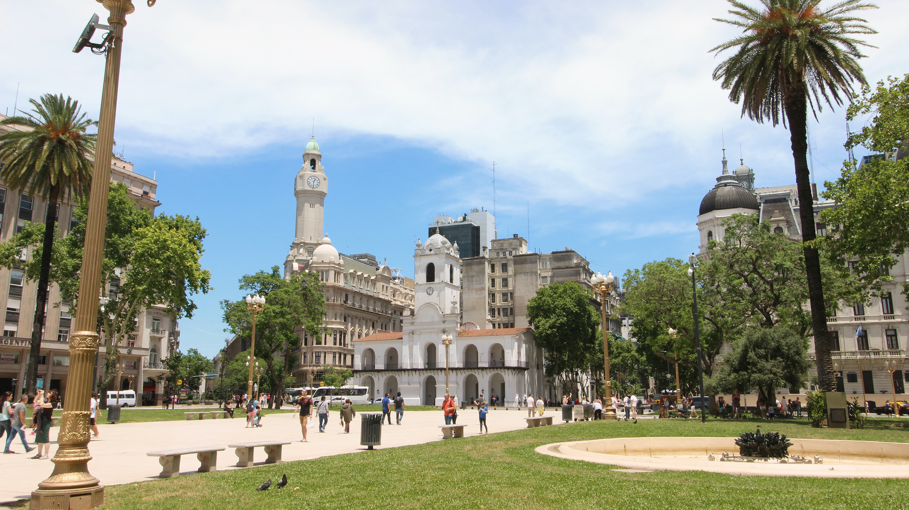
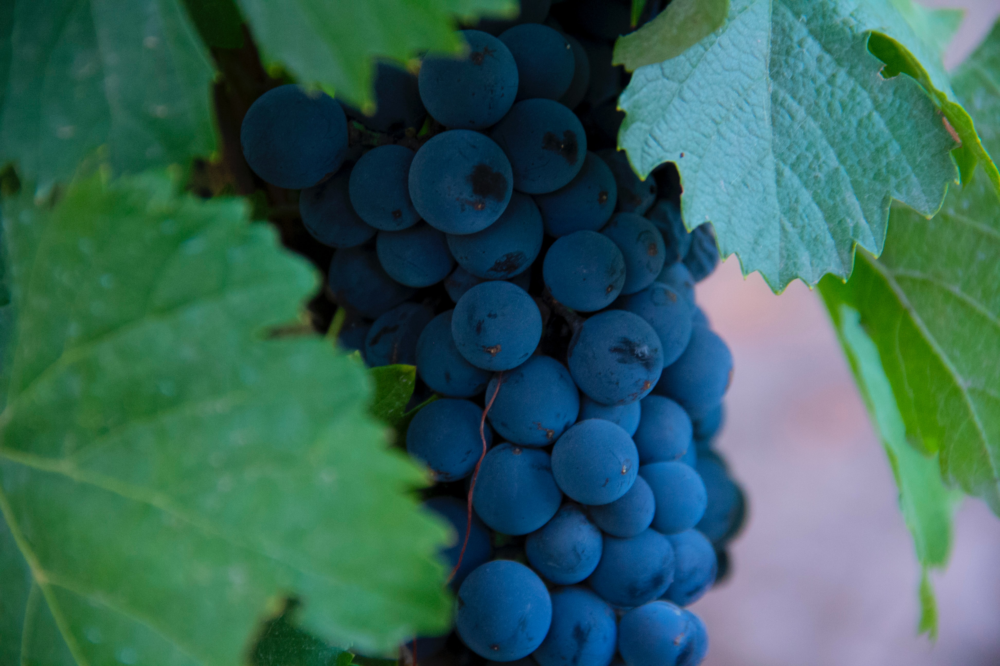
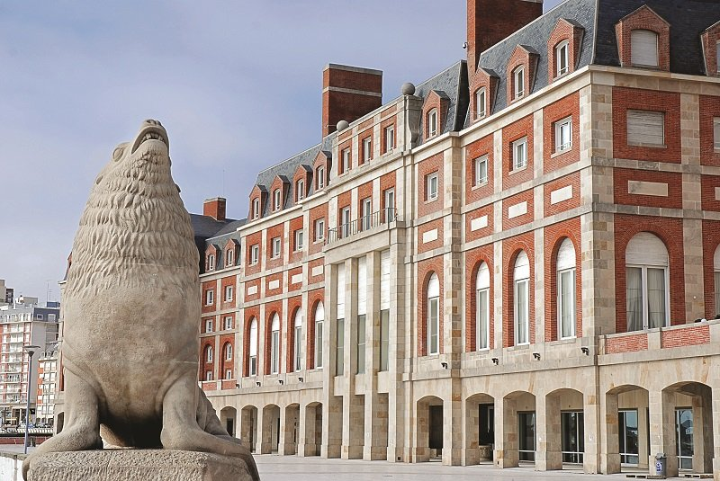
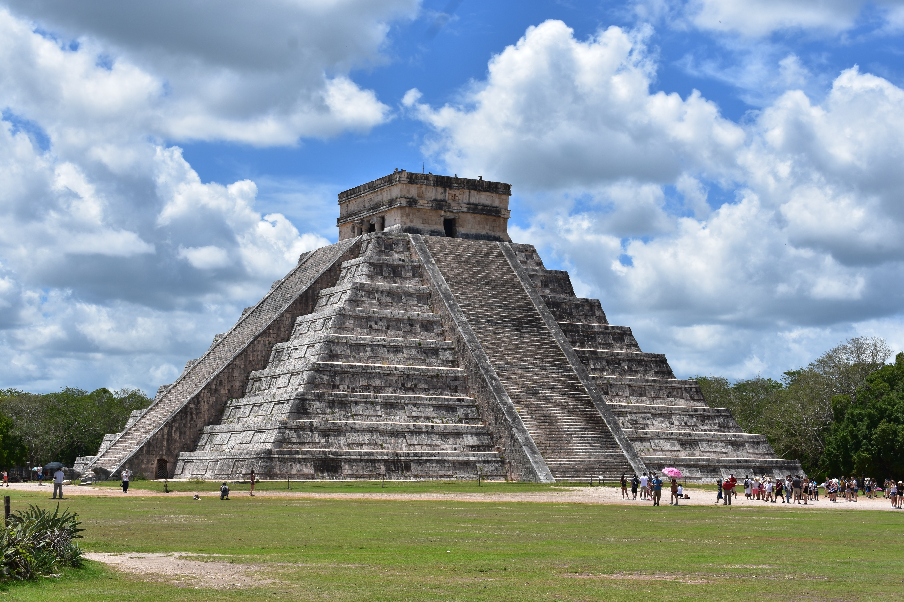

BUENOS AIRES
La lista de motivos para visitar Buenos Aires es extensa. La vas a recorrer, te va a emocionar y te llevarás un gran recuerdo de ella. Te presentamos buenos motivos para conocer una de las ciudades más atractivas de Latinoamérica.
Podrás bailar tango en su lugar de origen. En la ciudad encontrarás numerosas tanguerías con orquestas y bailarines en vivo. Los lugares más reconocidos incluyen una cena con una especialidad de carnes argentinas o un menú internacional.
La noche es un elemento clave en la “ciudad que nunca duerme”. En sus bares y barras, cervecerías y discotecas, los jóvenes y adultos encuentran propuestas durante toda la semana para disfrutar hasta que salga nuevamente el sol. Sólo aquí podrás cenar en un restaurante después de medianoche o arrancar la movida a las tres de la madrugada.
Vas a comprar prendas de autor de verdadera calidad: Curtiembres con productos artesanales de cuero auténtico. Tampoco te pierdas las ferias de antigüedades y artesanías, llenas de curiosidades e historias escondidas.
La cocina porteña se basa en la esencia de los inmigrantes que poblaron Buenos Aires. No te vayas sin probar un buen asado, la pizza porteña, las empanadas, el helado de dulce de leche, los alfajores, unos ricos churros y, por supuesto, el tradicional mate.
Son muchos los motivos que llevan a indicar que Buenos Aires es una ciudad empapada de cultura. Lo demuestran sus 380 librerías, sus 287 teatros y sus 160 museos. También colabora el Colón como uno de los cuatro teatros líricos más destacados del mundo.
Recomiendo ir a visitar la Reserva Ecológica, de 350 hectáreas, es punto de encuentro de miles de runners, turistas, jóvenes y especialistas en medio ambiente.
CINQUE TERRE

Cinco pequeños pueblos coloridos de Italia (Riomaggiore, Manarola, Corniglia, Vernazza y Monterosso), colgados en acantilados, un paisaje abrupto que mira al mar, en la región de Liguria. Parece un sitio de cuento pero es real. Cada uno con sus particularidades y belleza, y el entorno de un paisaje sobrecogedor.
Me he encontrado con gente amable y servicial.
La comida en ésta región de Italia llega directo del mar a nuestro plato.
Cada uno de los pueblos está conectado por senderos deslumbrantes, algunos de los paseos costeros más bonitos del planeta. Y todos se pueden hacer caminando, entre acantilados, y trayectos como el «paseo de los enamorados» o Vía Dell’Amore, un camino pavimentado aptos para todos las edades.
Si lo nuestro no es caminar, se puede unir cada pueblo en ferry y descubrir cada una de las vistas desde el mar.
En Cinque Terre no faltan lugares donde descansar y disfrutar de las vistas hacia el mar y el colorido de los pueblos más hermosos de Italia.
Aunque pequeñas, en rincones escarpados, hay pequeñas playas donde sentirse un afortunado por estar allí.
Si vamos en verano podemos hacer kayak, snorkel, buceo. El agua de la costa es transparente y permite disfrutar del espectáculo sobre superficie, o debajo de ella.
MENDOZA
La provincia de Mendoza tiene una belleza capaz de conmover hasta al más duro. Los paisajes, el clima, la gente: todo hace que den ganas de volver una y otra vez.
La ciudad de Mendoza es una ciudad grande y, tal vez, una de las más lindas de Argentina. Sus plazas, sus parques, sus calles, su arquitectura, sus rincones…todo arbolado: vale la pena recorrerla y perderse un rato.
La provincia es una de las principales productoras de vino de la Argentina, y eso se siente en el aire. Conocer bodegas –grandes, pequeñas, rústicas o modernas– es una de las cosas más lindas de visitar Mendoza. Incluso si el vino no es lo tuyo, las bodegas y los viñedos valen realmente la pena.
Cacheuta lo tiene todo a tan solo una hora de viaje desde la ciudad y en medio de un paisaje impresionante. Las Termas de Cacheuta te permiten relajarte, desconectarte y recargar energías. Es posible alojarse en las termas, disfrutar un día de spa o visitar el parque de agua.
En verano o en invierno, con nieve o sin ella, las montañas le dan el marco perfecto a esta provincia que te llena la vista y el corazón de paisajes maravillosos. El senderismo es una opción accesible para cualquiera, ya que existen circuitos con distintos niveles de dificultad. Si no, solo entregarse a contemplarlas es un plan más que bueno.
LONDRES

La capital del Reino Unido está llena de arte. Allí se encuentran las mejores galerías y museos del mundo. Muchos de ellos, gratuitos. El Museo Británico, la Tate Modern y el Museo de Historia Natural son solo algunos de ellos.
También es el hogar de los castillos más famosos del mundo. Puedes admirar la arquitectura del castillo Windsor, ubicado al oeste de la ciudad o visitar el Buckingham Palace, la residencia habitual de la Realeza. El ingreso al palacio está habilitado de julio a septiembre. Es muy curioso ver gente reunida cada día para presenciar el popular cambio de guardia.
No puedes irte sin conocer el Big Ben, el símbolo más emblemático de Londres. Construido en 1840 con su estilo gótico y sus relojes puntuales que adornan el paisaje londinense. Muy cerca se encuentra el London Eye, una de las ruedas de la fortuna más famosas. ¡Tenes que subirte y observa la ciudad desde las alturas!
Londres es el lugar ideal para los que aman ir de compras. La oferta es gigante. Desde las marcas más famosas hasta pequeños mercadillos. Oxford Street es una de las mejores zonas para esta actividad. Encontraras centros comerciales y lugares para pasear tranquilamente. Si buscas precios económicos, la calle Bond será tu mejor opción. También puedes encontrar mercadillos como Camden Town, Portobello o Convent Garden y sumergirte en el ruido y el movimiento de las calles.
Algo encantador de Londres es que no hace falta ir muy lejos para encontrar zonas verdes. Camina por los parques de la realeza, entre ellos, Hyde Park y Richmond Park. Si buscas actividades en la noche, la ciudad está llena de teatros fantásticos como el Royal Opera House donde puedes disfrutar de la ópera y otras obras. Luego puedes dar un vistazo a los pubs ingleses. Son el lugar perfecto para relajarse y conocer gente.
MAR DEL PLATA
La ciudad de Mar del Plata es conocida como "la Ciudad Feliz". En verano, además de recibir a millones de visitantes venidos de todas partes del país, conjuga el encanto y la belleza de sus recursos naturales con la infraestructura y los servicios disponibles, además de la hospitalidad de su gente.
Es el centro turístico balneario más importante de la República Argentina. Y tiene un clima templado que lo hace encantador!
Además de un mar excepcional, Mar del Plata posee acantilados, médanos y extensas playas de arena que se prestan para disfrutar del verano realizando caminatas, travesías en bicicleta o paseos a caballo.
Desde el aire, se realizan actividades como parapente y saltos de bautismo en paracaídas. En el mar se destacan las actividades náuticas: el surf, el windsurf, jet ski, buceo, los paseos en velero o en lancha y la natación, aunque uno de los deportes favoritos de quienes visitan "la Perla del Atlántico" es la pesca deportiva, tanto practicada desde las escolleras de la ciudad como embarcados en las lanchas que parten del famoso puerto.
Allí, además de observar sus lobos marinos y la rutina de los hombres del mar que vuelven con su pesca de todos los días, es posible degustar todo tipo de mariscos y pescados en la decena de restaurantes que ofrecen sus servicios.
Mar del Plata lo tiene todo. Su vida cultural y paseos más destacados incluyen la plaza Colón, el Torreón del Monje, el barrio Los Troncos, el puerto, Punta Mogotes. Por la noche, sus pubs, discos, bingos y el famoso Casino de Mar del Plata están preparados para recibir a los clientes más exigentes.
Las salas de teatro de la ciudad se colman de público ante la presentación de las obras más destacadas de la temporada. Sus inmediaciones son también bellas; se puede acceder a lugares como la laguna Sierra de los Padres, las playas de la cercana Chapadmalal o la serrana ciudad de Balcarce.
Mar del Plata es la combinación perfecta para quienes buscan tranquilidad y descanso con la posibilidad de encontrar bullicio y diversión constantes en cada rincón de la ciudad.
RIO DE JANERIO

Si te gusta la samba y las danzas tropicales, el Carnaval de Río es un evento que deberás presenciar al menos una vez en tu vida. Pero así como maravilloso, el mes del Carnaval puede resultar abrumador si pensamos en la gran cantidad de visitantes que llegan para esta fiesta multitudinaria, que genera sobreprecios en hospedaje y comida, y que puede llegar a hacer colapsar los servicios de transporte y comunicación.
Por eso, una gran opción es visitar Río en primavera, cuando las escuelas de samba inician sus ensayos. Estos se realizan en el mismo Sambódromo y son gratuitos. Después de los ensayos se organiza una fiesta al aire libre con música de samba en vivo y excelentes bailarines disfrazados. Para no perdérselo.
Aunque suene un tópico de las guías turísticas, visitar Copacabana, Ipanema y Leblon es un paso obligado si llegas a Río. Felizmente, durante esta temporada –y a diferencia del verano– la mayoría de estas playas permanecen con pocos bañistas, por lo que podrás disfrutar de un gran día sin la incomodidad de sentirte atrapado.
Entre sus principales platos se encuentran la feijoada, y el acarajé. Saborers muy distintos a los que estamos acostubrados.También podrás degustar los típicos postres de Río, entre los que destaca el tradicional quindim, super recomendado.
Aunque sus costos suelen ser bastante accesibles, los museos de Río abren sus puertas cada martes de forma gratuita, para que visitantes locales y extranjeros puedan explorar parte de la cultura e historia de la ciudad. Algunos de los museos más famosos de la ciudad son el Museo de Arte Contemporáneo de Niteroi, el Museo de Historia Natural y el Museo del Mañana.
QUITO

En quito podes vivir la experiencia de poner un pie en cada hemisferio, y caminar por la línea ecuatorial que marca el punto de Latitud 0° 0’ 0”, y vivir la energía del estar en El Centro del Mundo. Por tener esta ubicación, podemos disfrutar de su clima primaveral todo el año. Tiene un Centro Histórico donde disfrutaras de ver: la Plaza Grande y el complejo religioso de San Francisco.
Los sabores de la cocina quiteña es uno de los secretos mejor guardados de la ciudad. Merecen ser degustados: el locro, la fritada, las empanadas, los envueltos, las salsas de ají, los jugos de fruta, el helado de paila son solo algunos de los platos clásicos de esta ciudad. Tu visita no estará completa sin saborear los chocolates elaborados con cacao fino y por supuesto café de altura que se producen en Ecuador. Y no dejes de disfrutar de las frutas frescas sólo encontrarás allí: el tomate de árbol, la naranjilla, la chirimoya, la granadilla y el taxo, el babaco y mucho más.
Nuestros museos, teatros y centros culturales Quito cuenta con una gran cantidad de lugares donde se promueve la cultura. El Museo de la Ciudad, el Museo Casa de El Alabado (con una extraordinaria muestra de arte precolombino), el Museo de Cera (Alberto Mena Caamaño), el Teatro Sucre, el Centro de Arte Contemporáneo, la Casa de la Música son algunos de los más importantes. Los niños también tienen sus espacios en Yaku Parque Museo, el Museo Interactivo de Ciencias y el Museo del Tren. Hay varias opciones en restaurantes, cafés, bares y discotecas en los barrios de La Mariscal, La Floresta, Guápulo y La Carolina. Allí encontrarás música, gastronomía local e internacional, fiesta y, sobre todo, ¡la singular alegría quiteña!
También podes emprender un viaje en “el ferrocarril más difícil del mundo”, que ahora se ha convertido en un tren turístico patrimonial, uniendo la Costa con los Andes.
Mira a Quito desde todos sus ángulos, visita el Teleférico temprano en la mañana y admira la urbe con los volcanes que están alrededor. Sube al Panecillo, lugar estratégico para observar Quito de sur a norte.
PARÍS

Paris es una de las pocas ciudades en el mundo que logra trascender en las personas, sin importar su nacionalidad, lengua o tradiciones. Es posiblemente la ciudad más bonita del mundo y si te gusta viajar, debes aventurarte por lo menos una vez en tu vida a descubrir y disfrutar de sus atardeceres, de su cultura, rincones únicos y de una elegancia que compite día a día con la sencillez de lo cotidiano.
Hay que disfrutar del Arte en El Louvre, París te permite disfrutar de algunas de las obras más famosas de la historia.
Podrás admirar Notre-Dame una de las catedrales de estilo gótico más antiguas del mundo. Podemos observar de cerca sus inquietantes gárgolas, así como el campanario en el que vivió el mítico Jorobado.
Ver el atardecer desde Montmartre, no hay nada mejor que ver los últimos rayos de sol iluminando los tejados de sus casas. Si vamos a la cima de la colina Montmartre, el punto más alto de la ciudad que ofrece las mejores vistas de París. Y bajando por sus calles podemos encontrar singular barrio conocido como el “Barrio de los Pintores”, en el que se encuentra el mítico cabaret de Moulin Rouge. Hacerse una foto con la Torre Eiffel de fondo, el monumento más visitado del Mundo.
Descubrir París desde el río Sena ofrece una perspectiva única de la ciudad.
París, se caracteriza por contar con platos delicados y refinados, con fantásticos toques de sabor. Si o si tienes que comer un croissants con café. Aparete hay que deleitarse con un FOIE GRAS, UNA RATATOUILLE, UN CROQUE MONSIEUR,ETC. También se caracteriza por las miles de variedades de quesos, de los cuales te recomiendo probar Emmental, Brie y Camembert.
MÉXICO
Al viajar a México, encontramos muchas cosas para hacer y ver. Este país es uno de los pocos destinos donde podes encontrar ruinas prehispánicas, construcciones coloniales, edificios estilo francés y las últimas tendencias arquitectónicas en un solo lugar.
México tiene interesantísimas tradiciones como el baile de la Guelaguetza en Oaxaca o la celebración del Día Muertos, en Janitzio, Michoacán. La belleza y colorido de estas tradiciones seguramente te dejarán sin aliento. Son 2 destinos baratos en México que no podes dejar de visitar.
Te invitamos a dejarte sorprender por la Pirámide del Sol o la Pirámide de la Luna en Teotihuacán, Estado de México o qué tal visitar Chichén Itzá en la península de Yucatán, una de las maravillas del mundo moderno o dejarte enamorar por la belleza de Tulum en Quintana Roo. No podes pasar por México sin conocer estos hermosos lugares.
Los mexicanos son conocidos mundialmente por su calidez y facilidad para hacer amigos, les encanta brillar como buenos anfitriones y ayudar a cualquier viajero perdido o que se encuentre en apuros. Aplican al pie de la letra la frase de “Mi casa es tu casa”.
Nunca encontrarás un amanecer o atardecer como aquellos que disfrutes en las paradisiacas playas mexicanas. La tradicional Acapulco en Guerrero, o las nuevas favoritas como Cabo San Lucas, Baja California, La Paz, Puerto Vallarta o Cancún, son lugares para enamorarse de las playas.
La comida en México se disfruta y es deliciosa sin importar si estás en un restaurante mega reconocido o un puesto de mercado.
Podes llevarte un trozo de las tradiciones mexicanas a casa al comprar alguno de los productos hechos por apasionadas manos artesanas donde convergen la belleza, imaginación y herencia cultural.
Podrás hacer cuanta actividad se te ocurra, desde rafting en los ríos de Vera Cruz, adentrarte a los misteriosos cenotes sagrados de los mayas en Yucatán o recorrer de extremo a extremo Barrancas del Cobre por medio de una tirolesa. O también nadar con ballenas y tiburones en México o aquellos que desean recorrer dunas en el desierto de Sonora, tomar un buen vino mexicano en Baja California.